研究对象
接触建立、滑移、旋拧、卡扣与形变：关注动作完成过程中的物理机制。
拓境智能 × Sharpa · 联合研究提案
拟以 SharpaWave 为首发本体，共同检验：仿真中的接触、触觉与策略结论，能否在真机上成立。
Real2Sim2Real · 物理 OOD · 目标 CVPR 2027
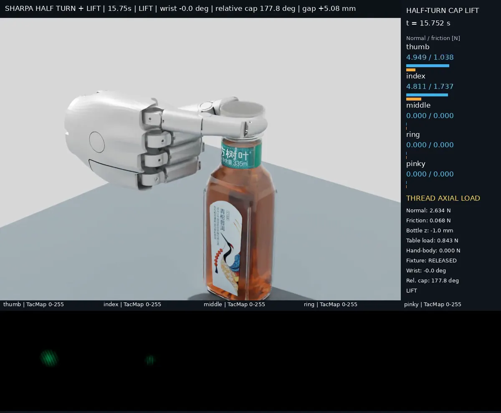
当摩擦、载荷与可见性发生变化时，触觉何时改变策略的优劣？我们能否用经过真机校验的物理交互仿真提前预测这种变化？
接触建立、滑移、旋拧、卡扣与形变：关注动作完成过程中的物理机制。
同时比较物理响应、策略排序和失败模式，检验仿真结论的适用边界。
先完成一个 SharpaWave 接触任务族的 sim–real 对照，再扩展任务与方法。
为什么是 SharpaWave
它有我们需要的触觉和精准的仿真模型，而且我们已经开始用它。
SharpaWave 带视触觉；我们目前没有带触觉的灵巧手。
仿真端可不可信，首先取决于本体模型。我们已接入 SharpaWave 仿真资产，用于瓶盖旋拧与换握。
要回答触觉在 Real2Sim2Real 中到底起什么作用，需要一只带触觉的手贯穿始终。现有演示已接入 TacMap 触觉图。
我们的做法
real2sim 管线
以厨房场景为例
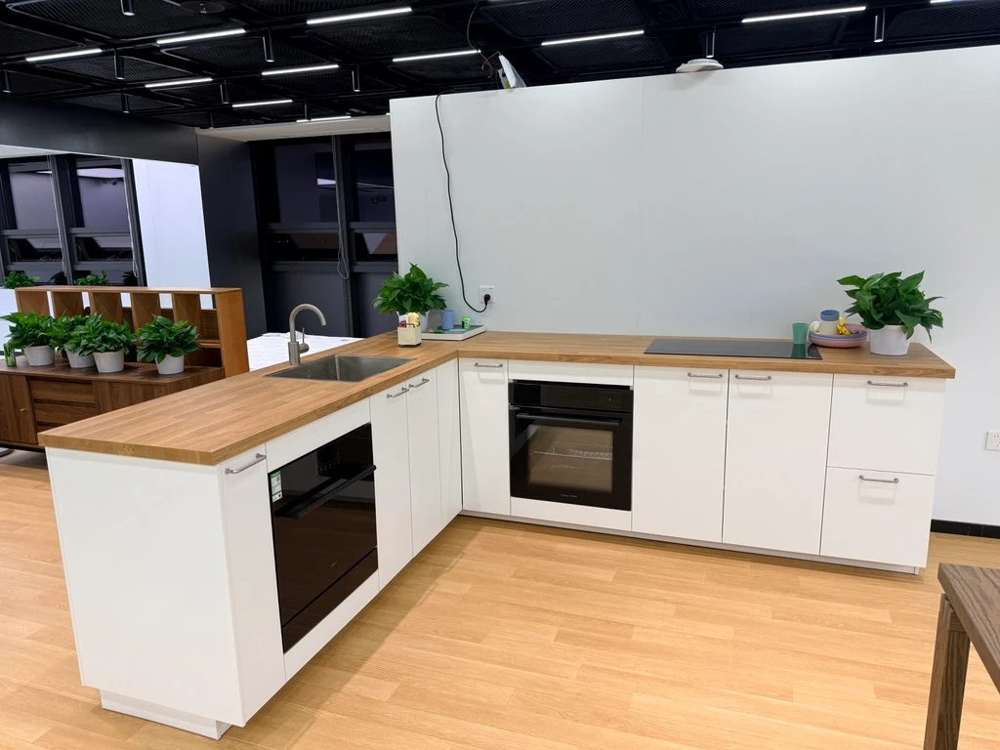
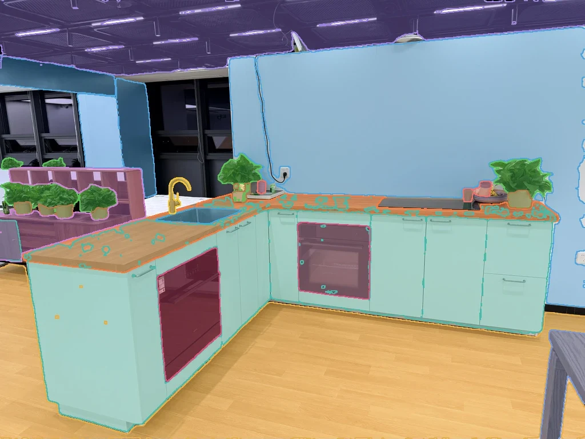
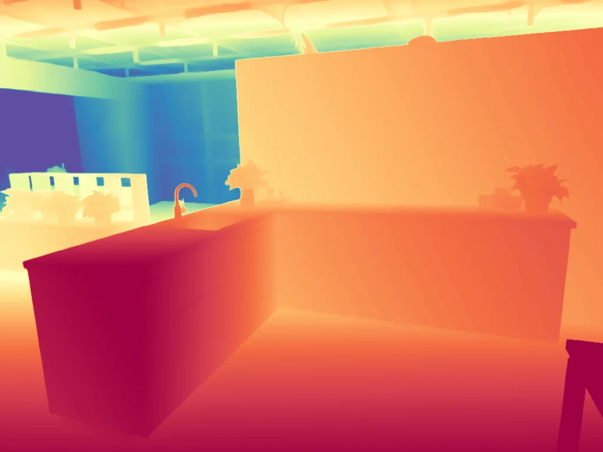
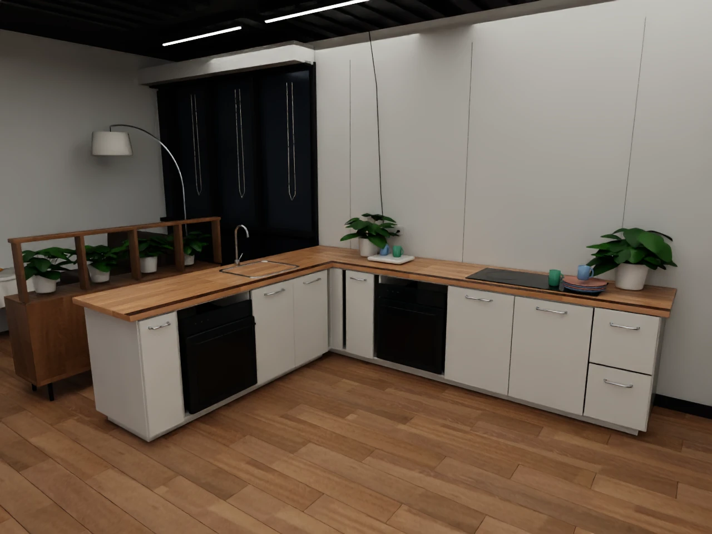
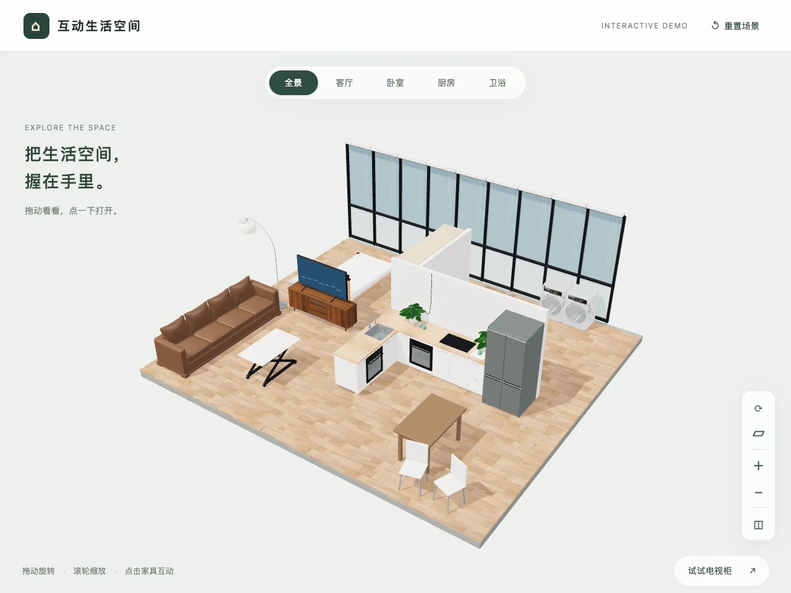
在真实家庭环境中拍摄场景照片，作为重建的起点，也是之后真机对照的基准。
输出：RGB 图像
对照片做分割，得到逐物体掩码，区分需要单独建模的物体与背景。
输出：逐物体掩码
估计深度，恢复场景几何与物体之间的空间关系。
输出：深度图
在 Blender 中整理几何与材质，使渲染外观接近真实照片。
输出：带材质的物体资产
导入 Isaac Sim 并配置物理，得到可用于并行采集、训练与评测的仿真场景。画面可交互：拖动旋转视角，点击家具打开柜门。
螺纹、卡扣 / 弹簧与可形变物体，这些细节决定了仿真结论能否迁移到真机。
螺纹接触参与求解：SharpaWave 半圈旋拧后把瓶盖提起，同步显示各指法向力 / 摩擦力、螺纹轴向载荷与 TacMap 指尖触觉图。
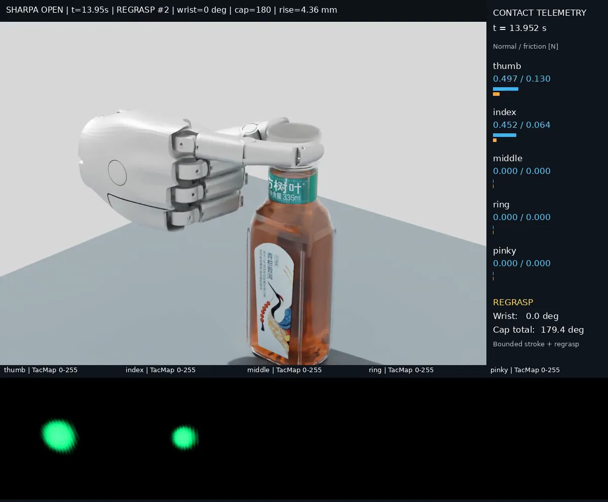
旋拧、松开、换握循环，直到瓶盖旋开；全程记录腕部角度与累计旋转角。
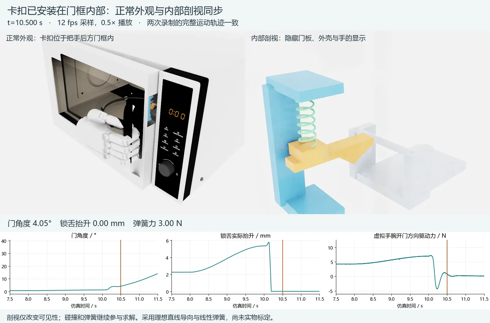
门框内部的卡扣与弹簧参与接触求解，外观与内部剖视同步回放，记录门角度、锁舌抬升与弹簧力。
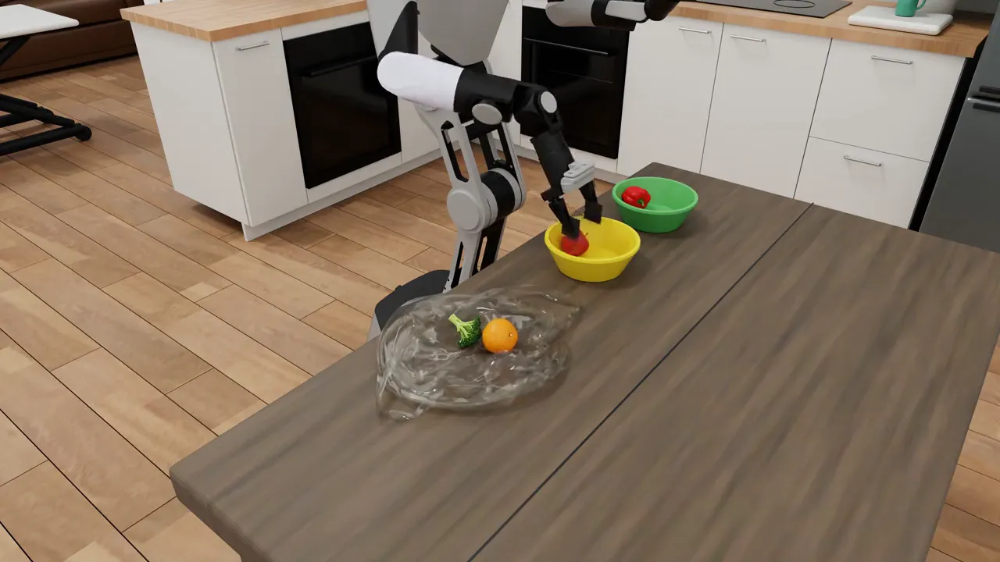
在 Newton 中仿真可形变塑料袋，机器人从袋中分拣果蔬。
人类演示、遥操作与仿真直接生成三条来源，在仿真里补上力与物理可行性，汇成统一格式的训练与评测数据。
LeRobot v3.0
仿真与真机两端
ECCVW 2026 Oral · 代码与数据集已开源 · arXiv 2607.04234（Workshop 版） · 代码 · 数据集 · 项目站
对触觉的两条结论
直接把触觉加进策略输入，in-distribution 下 6 组对比 4 胜 2 负，没有统一收益，还可能增加过度挤压。
分布偏移下，视触觉变体的任务成功率在全部 6 组对比中都更高（单侧符号检验 p = 0.016）。
这些结论来自平行夹爪 + GelSight；在灵巧手上是否成立，正是要在 SharpaWave 上检验的。
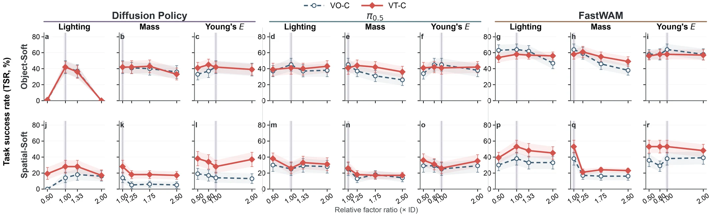
分布偏移下的任务成功率：逐一改变光照、质量、杨氏模量。虚线为仅视觉，红线为视触觉，竖线为训练分布。
Spatial-Soft 上，三个因子、三种策略，视触觉曲线都不低于仅视觉。
Object-Soft 上两条线基本重合，分离出现在 π0.5 与 FastWAM 的质量偏移上：触觉感知的是接触建立之后的变化。
光照作用在接触之前；Diffusion Policy 在光照 ×0.5 与 ×2.0 时，两种模态的成功率都降到 0。
4 个 real2sim 场景；Isaac Sim + Newton 环境；SharpaWave 仿真资产；接触任务演示；数据采集与 RL 并行化。
首批任务采集与训练、遥操作、评测并行化及数据格式适配。已接入 10 个 policy：ACT、Diffusion Policy、ViTacFormer、ForceVLA、OpenVLA、π0、π0.5、GR00T N1.7、LingBot-VA、Fast-WAM。
完成真机与传感器标定、训练代表性触觉基线，运行独立测试并交付物理差异与策略排序报告。
说明：以上演示均在仿真中完成；目前还没有 SharpaWave 真机结果，真机验证正是首轮合作要做的事。
团队
拓境智能触觉生态团队
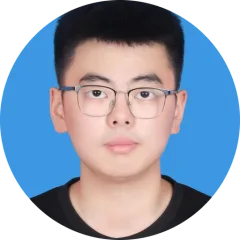
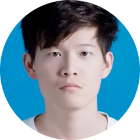
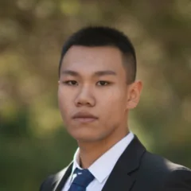
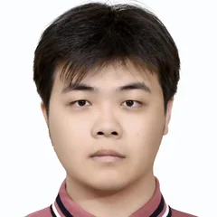
从接触过程到任务结论，用可测量、可复现的证据界定仿真的可信范围。
测量接触位置、滑移和运动轨迹；旋拧任务检查转角与轴向位移的关系，并报告异常穿透。
对照法向力、摩擦力、扭矩及机构状态；用真机标定的参数检验插接阻力、螺纹、卡扣和弹簧响应。
对齐接触发生时刻、空间分布与变化趋势，记录标定误差、采样频率和延迟；不把深度图直接当作真实传感器输出。
在未用于标定的测试条件下比较策略排名、触觉增益和失败类型，同时报告重复试验的不确定性。
不追求仿真与真机成功率的绝对一致，而是看仿真能否帮助选择方法，并清楚标出它还不能支持哪些判断。
比较力—位移、转角—载荷和触觉事件时序，定位哪一段交互开始偏离真机。
以 Sim–Real policy-ranking correlation 为主指标，报告秩相关、Top-1 一致性与排序不确定性。
比较受控条件下触觉收益的方向、幅度与失败模式，寻找收益变化或策略排序反转的条件。
排名一致性作为 sim-to-real 评测指标，参考 SIMPLER（Li et al., 2024）。
仿真与真机成功率排名的秩相关
成对排序一致与不一致之差
仿真与真机成功率的线性相关
排名错位的平均最大代价
仿真中最优的策略在真机上是否也最优
与已有工作的关系
已有工作各有侧重。我们的设计区别在于：把真实家庭场景重建进仿真，在 SharpaWave 真机上验证，并借鉴 SIMPLER 以 Sim–Real 排名一致性为主指标，把真机触觉纳入评测。
| 我们 | Bench2Dex | DexVerse | DexJoCo | LabDex | Labimus | |
|---|---|---|---|---|---|---|
| 仿真平台 | Isaac Sim + Newton | Isaac Lab | Isaac Lab | MuJoCo | 未说明 | Isaac Sim |
| 真实场景 real2sim 重建 | ✓ 4 个真实家庭场景 | ✗ | ✗ | ✗ | ✗ 人工搭建的实验室孪生 | ◐ 实验室资产与工位布局 |
| 真机评测 | 待验证 计划验证，待真机到位 | ✗ 仅仿真 | ✗ 仅仿真 | ✗ 仅仿真 | ✓ Franka + XHand | ✗ 仅仿真 |
| Sim–Real 排名一致性指标 | 待验证 拟采用主指标，尚无真机结果 | ✗ | ✗ | ✗ | ◐ 仅定性比较趋势 | ✗ |
| 触觉 | 待验证 仿真触觉已接入；真机视触觉待 SharpaWave 到位 | ◐ 仅仿真触觉 | ◐ 仅仿真接触力 | ✗ | ✗ | ✗ |
| 多本体 | 计划中 首轮固定 SharpaWave；后续扩展 | ✓ 12 种，均为仿真 | ✓ 6 种手，均为仿真 | ✗ Allegro | ✗ XHand | ✗ Revo 2 |
| 双手 | 计划中 后续扩展 | ✓ | ✓ | ✓ | ✗ | ◐ 已定义，尚未评测 |
| 任务场景 | 家庭场景（4 个真实家庭场景重建） | 桌面操作，家居与办公物体 | 桌面操作，家居物体 | 桌面操作，日常物体 | 化学实验室 | 化学实验室（通风橱工位） |
本表是范围梳理，不能据此认定我们的规划优于已有结果。我们拟增加的证据是接触过程的物理一致性，以及仿真结论对真机的预测能力。
「我们」一栏按当前状态标注：✓ 已完成，其余为待验证或计划中（见「当前进展」）。其余各栏依据各自 arXiv 论文：Bench2Dex 2609.15726 · DexVerse 2607.08751 · DexJoCo 2605.16257 · LabDex 2608.18618 · Labimus 2606.31037，截至 2026-09。
从 Sharpa 已关心的接触感知与泛化问题出发，增加经真机验证的统一比较与误差诊断。
视触觉状态表征与仿真到真机的泛化、扰动恢复，为联合研究提供直接衔接。可共同研究：哪些接触扰动会改变其优势，仿真能否预测变化？
Sharpa 官方研究介绍
Tacmap 提供仿真触觉建模基础，T-Rex 探索时序触觉与快速反应。可共同检验：传感器对齐如何影响任务收益，静态与时序触觉的适用条件是什么？
T-Rex 的 Sharpa 官方介绍
优先交付可用于科研判断和工程改进的结果，长期共建以 SharpaWave 为首发本体的开放 benchmark。
按一个任务族交付仿真与真机的接触响应差异、失败案例，以及最值得修正的模型与接口问题。
在同一本体、受控数据与物理条件下，量化触觉何时有效、何时失效，以及不同方法的排序。
共同设计任务和诊断协议，沉淀可复现脚本、经校验的参数与场景；以实际研究贡献形成联合成果。
先用已有螺纹交互演示建立一个可重复的小闭环，验证协议后再扩大规模。
| 任务与本体 | SharpaWave 单手旋拧瓶盖，覆盖接触建立、旋拧、换握与脱离。 |
|---|---|
| 交付内容 | 力 / 扭矩与运动曲线、触觉事件、策略排序和失败案例；同步给出重复次数与置信区间。 |
建议的最小合作范围
围绕首个任务族交付
论文中包含 SharpaWave 真机 + 触觉结果，需要此档或以上
联合研究署名依据实际贡献协商；硬件支持按贡献致谢。数据 / 代码开放范围及联合发布由双方确认，首轮不要求开放未公开模型。
建议里程碑 · 以可检查的产出推进合作，后续扩展依据首轮结果决定。
完成控制 / 触觉接口检查，交付任务复现视频、测量通道清单与已发现的接口问题。
交付接触曲线初步对照、参数标定记录与误差清单；冻结独立测试协议。
交付首轮 sim–real gap、代表性方法排序与不确定性、失败模式及下一轮改进建议。
建议周期从真机与测试平台可用、SDK / 触觉数据可访问、双方确认首轮任务后起算。第 2 周复核可行性；若依赖未就绪，调整范围与排期并保留阶段报告。
首轮试点只是起点。我们希望与 Sharpa 长期合作，共同推动灵巧手与触觉的发展。
起点
从瓶盖旋拧开始，在 SharpaWave 上跑通第一个 Sim–Real 对照，建立双方都信得过的评测协议。
共建
把更多真实场景与接触任务纳入评测，联合发布，让社区在同一把尺子上比较灵巧手与触觉方法。
长期
持续积累经真机校验的物理交互与触觉数据，让仿真里的结论能够放心地用到真机上。